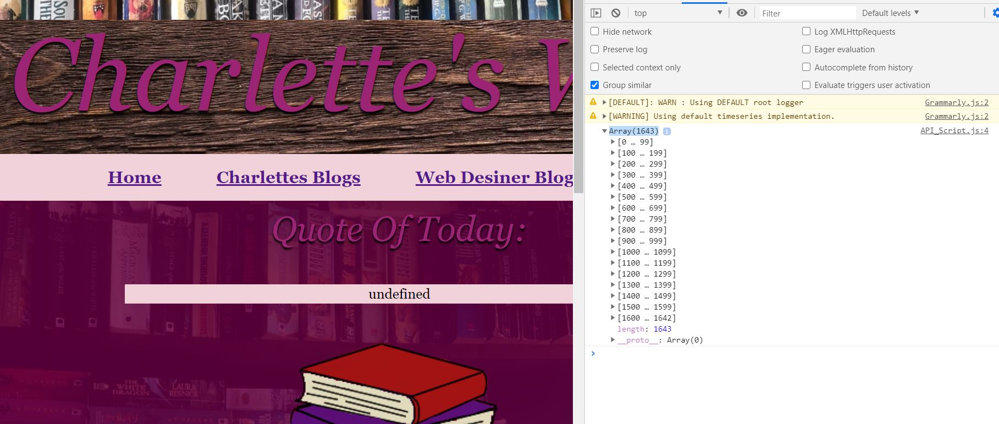

Charlette's Website
#15th Blog
Implementing API’s into my website
This part of our project was a lot harder than I had anticipated, and I was very frustrated at how many of my attempts at implementing API’s into my website resulted in a failure.
We were instructed to implement an API that could be best used for our character and website. As my character Charlette looks for inspiration around South Africa she visits many different areas. My first idea was to use a google maps API so that the readers of Charlette’s posts can also go and visit the areas she has been too. I was then made aware of the ‘Overlay an Image map type’ that would allow for me to not only show to the viewers of the webpage where they can go and see these places for themselves, but they can also see the photos that have been taken and overlaid over the map as well. This, I thought, would be a brilliant implementation into my site. I especially wanted to combine it with the graffiti blog posts of Charlette’s as there where many pictures taken in an area with a beautiful graffiti art that inspired her blog post.
An example of the 'Overlay an Image map type'i wanted to implement. Found at: https://developers.google.com/maps/documentation/javascript/examples/maptype-image-overlay
Yet, alas, implementing this API resulted in complete failure. I found it very difficult to get my code to work and was unable to find the key code to the area I wanted the google maps to display. After pulling my hair out for a couple of days, I decided that I would have to try and implement a new type of API into my website, as I was running out of time.
I decided that a random inspirational quote generator would be a good alternative to implement into my website as my character herself is driven off inspiration and would enjoy having inspirational quotes that could benefit her readers. Here, I worked with the Fetch function of JavaScript whereby the function accesses the API of the random inspirational quote generator and displays that quote onto the home page of Charlette’s website. However, another problem came about as I struggled to access the API’s information for free inspirational quotes, and I could not find an API that would work correctly. The sight I found the API quotes from had contained their quotes in an array and I was not able to access that array with the code I was using. In the code, depicted below, shows the code I was using as well as the way the information was portrayed on the site. I knew that in most cases I needed a keyword that held the quote that the sight would generate. However, since these quotes were held and displayed within an array, I was not able to figure out how to access them.

An example of the Array code issue i had.
I had found another API quotes site that I was then able to use, yet it contained the wrong types of quotes. I really wanted to implement inspirational quotes as I feel it overall suits my character and the website best. Yet this site provided tech based quotes and was the only one I was able to get to work. I then decided to still implement this API into my site as it related to the technical aspects of the site I was writing about in my web designer blogposts.

The final API implementation.
I am quite disappointed with the technical elements of the API in my website and I really would have liked to have implemented the google maps overlay as well as the inspirational quotes as I feel it would have been the best fit for my overall site. However, at least I was able to implement some type of API into my site even though it is not necessarily the best fit overall.